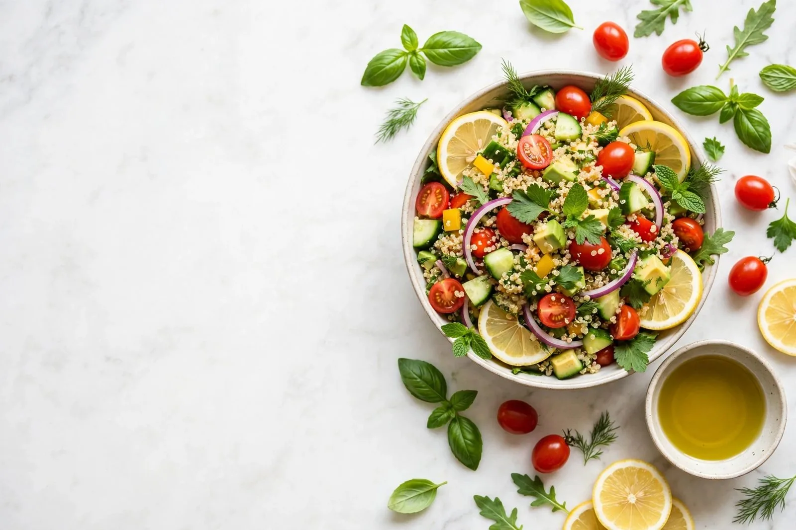
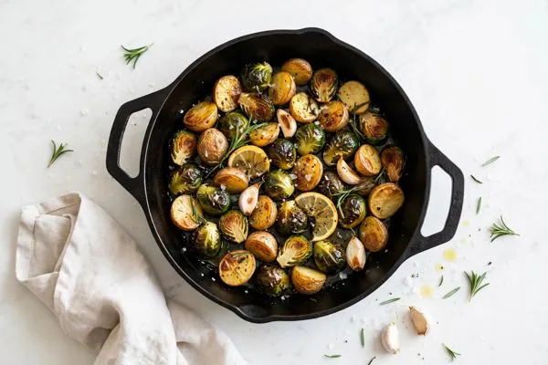
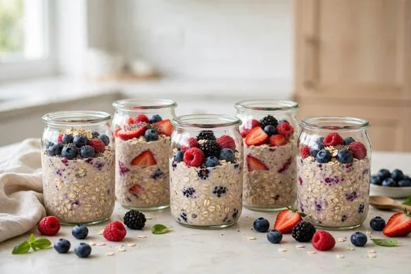
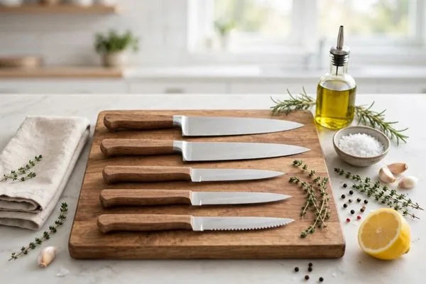

Easy & Quick Recipes
and the Right Taste.
Browse through our tasty recipes — dinner, desserts, breakfast and healthy. Clear steps, real photos, no fuss.
MORE RECIPESBrowse by Category
Explore our collections — click a category to filter the recipes below.
All recipes
Tap any recipe for full ingredients and step-by-step instructions. Use the ♥ to keep your favourites saved on this device, and the Pin button to save it to Pinterest.
Kitchen essentials
The tools used again and again in these recipes.

Cast-Iron SkilletFor the salmon and other one-pan dinners — sears beautifully and goes straight to the table.

Glass Meal-Prep JarsOvernight oats and salads stay fresh for days — and they photograph perfectly for Pinterest.

Chef’s Knife SetFast, safe chopping makes every “15-minute” recipe actually take 15 minutes.
When you shop through our Amazon links, we may earn a small commission at no extra cost to you — see our Affiliate Disclosure.